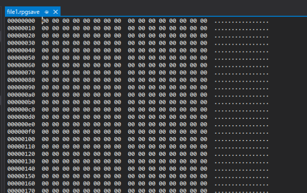

環境依存系のエラー調査など
概要
最近調査したツクールMVのエラーのログです。
解決できていないので、一応情報として残しておきます。
稀に発生するのか環境依存なのか、通常発生しないため調査困難なものです。
ロードできない問題
セーブしたファイルをロードしようとしてもブザーが鳴り、ロードできないという現象です。
該当のセーブファイルを確認すると以下のようにデータが壊れていました。
容量はあるように見えますが、全部0で埋められています。

セーブファイルが壊れているのでロードの問題ではなく、セーブ時の問題なのですが、発生条件はよくわかりませんでした。
ツクールのセーブは、セーブが実行される直前に.bakファイルが生成されます。
セーブに失敗した場合、そのbakファイルからセーブを復元するのですが、それも作用してはいないようです。
セーブファイルが壊れているのでセーブ時にゲームが落ちたとかありえるのかもしれませんが、発生時の状況も不明でこれ以上は無理でした。
音の再生時のエラー
以下のエラーが発生しました。
Uncaught RangeError: Failed to execute 'start' on 'AudioBufferSouceNode': The offset provided (-22089.3) is less than the minimum bound (0)
これは音声ファイルの再生位置をマイナスで再生しようとしたときに生じるエラーです。
例えばコンソールにAudioManager.playBgm({name: "Battle1", volume : 90, pitch: 100}, -200);のように打つとエラーを起こせます。
ですが、プロジェクトを見てもマイナス位置で再生しようとするような場面もなく、発生条件不明でした。
WebAudio.prototype._startPlayingメソッドの引数にoffsetがあり、これがマイナスの場合、0にするような処理を追加すればとりあえずエラーは出なくなるので、一旦これで対処しました。
起動しない問題
exeファイルをダブルクリックしてもゲームが起動せず、同フォルダ内にdebug.logが生成されます。
ログには以下のように記載されていました。
[WARNING:minidump_to_upload_parameters.cc(66)] duplicate annotation name metrics_client_id, discarding value 43cecd601cc84e9e9bbac5991f952aff
[ERROR:http_transport_win.cc(175)] WinHttpCrackUrl: URL は認識されているプロトコルを使用していません (0x2ee6)
これはSteamで配信されているMV製のゲームやnw.jsを採用しているゲームでも報告があるのですが、明確な解決手段は示されていませんでした。
nw.jsのバージョンを上げると解決するという話もありましたが、リリース後のゲームにそれを適用するのは厳しいです。
解決するかどうかもわからず、別の問題が発生した場合、問題の切り分けが難しくなります。
デプロイの工程も複雑になるのでこの手段は採用しませんでした。
別の解決方法としてWindows XP (Service Pack 3)互換モードにしたら、起動したというものがありました。
互換モードの切り替えはexeファイルのプロパティから選択できます。
掲示板を見るとこの手段で2人解決した報告があるので、興味深いです。
これで本当に解決するかどうかは手元に再現環境がないので定かではありませんが、試す価値はあるかもしれません。